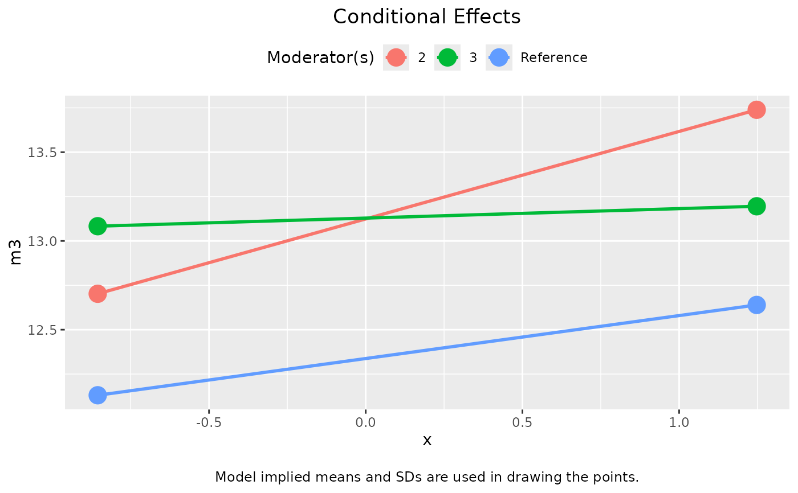
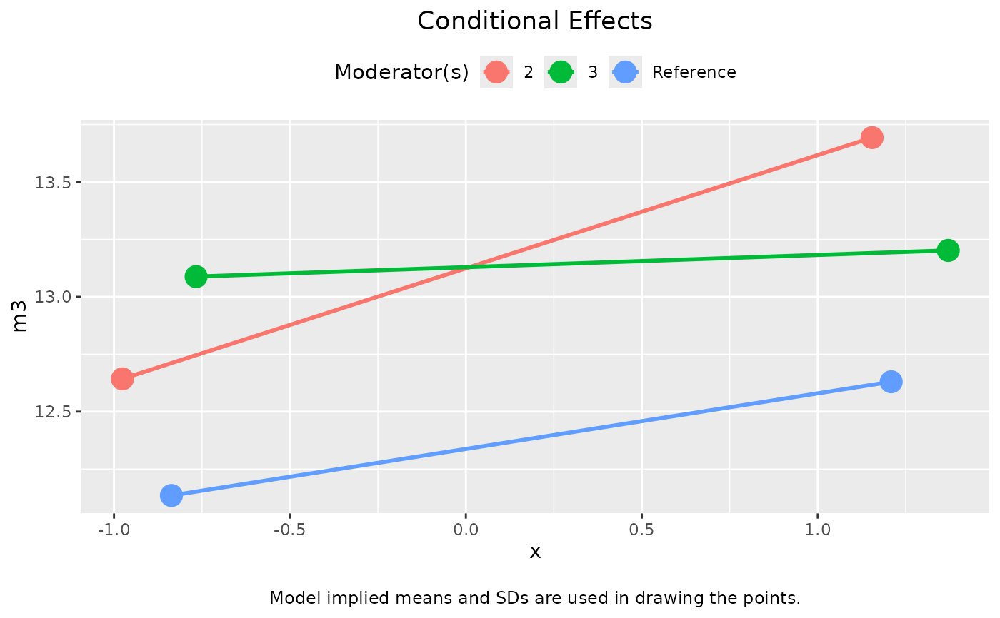
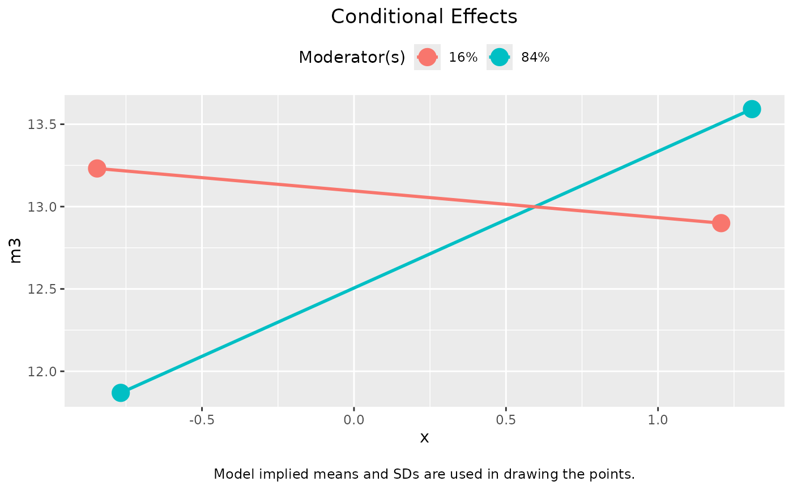
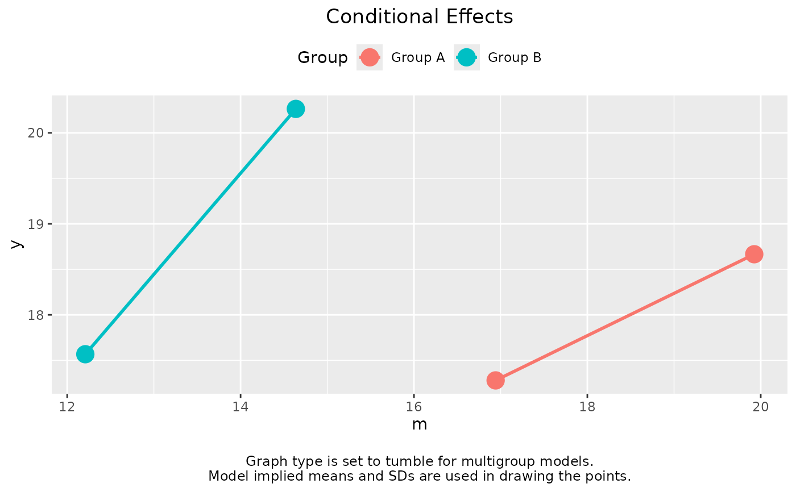
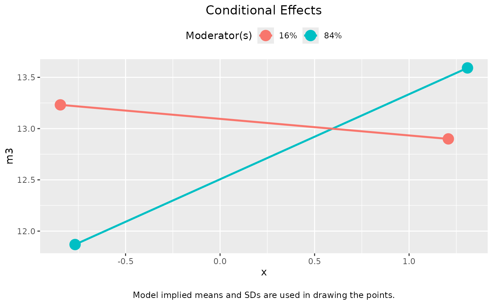
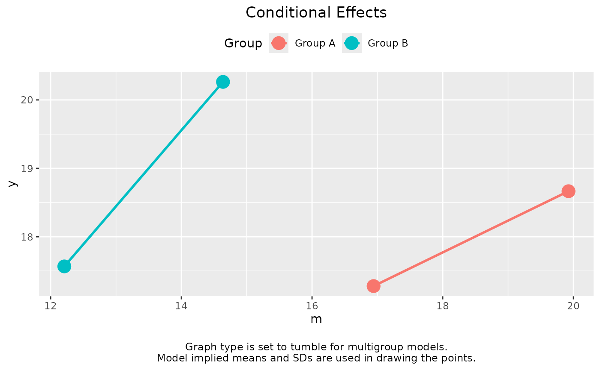

Plot the conditional effects for different levels of moderators.
Usage
# S3 method for class 'cond_indirect_effects'
plot(
x,
x_label,
w_label = "Moderator(s)",
y_label,
title,
x_from_mean_in_sd = 1,
x_method = c("sd", "percentile"),
x_percentiles = c(0.16, 0.84),
x_sd_to_percentiles = NA,
note_standardized = TRUE,
no_title = FALSE,
line_width = 1,
point_size = 5,
graph_type = c("default", "tumble"),
use_implied_stats = TRUE,
facet_grid_cols = NULL,
facet_grid_rows = NULL,
facet_grid_args = list(as.table = FALSE, labeller = "label_both"),
digits = 4,
...
)Arguments
- x
The output of
cond_indirect_effects(). (Namedxbecause it is required in the naming of arguments of theplotgeneric function.)- x_label
The label for the X-axis. Default is the value of the predictor in the output of
cond_indirect_effects().- w_label
The label for the legend for the lines. Default is
"Moderator(s)".- y_label
The label for the Y-axis. Default is the name of the response variable in the model.
- title
The title of the graph. If not supplied, it will be generated from the variable names or labels (in
x_label,y_label, andw_label). If"", no title will be printed. This can be used when the plot is for manuscript submission and figures are required to have no titles.- x_from_mean_in_sd
How many SD from mean is used to define "low" and "high" for the focal variable. Default is 1.
- x_method
How to define "high" and "low" for the focal variable levels. Default is in terms of the standard deviation of the focal variable,
"sd". If equal to"percentile", then the percentiles of the focal variable in the dataset is used. If the focal variable is a latent variable, only"sd"can be used.- x_percentiles
If
x_methodis"percentile", then this argument specifies the two percentiles to be used, divided by 100. It must be a vector of two numbers. The default isc(.16, .84), the 16th and 84th percentiles, which corresponds approximately to one SD below and above mean for a normal distribution, respectively.- x_sd_to_percentiles
If
x_methodis"percentile"and this argument is set to a number, this number will be used to determine the percentiles to be used. The lower percentile is the percentile in a normal distribution that isx_sd_to_percentilesSD below the mean. The upper percentile is the percentile in a normal distribution that isx_sd_to_percentilesSD above the mean. Therefore, ifx_sd_to_percentilesis set to 1, then the lower and upper percentiles are 16th and 84th, respectively. Default isNA.- note_standardized
If
TRUE, will check whether a variable has SD nearly equal to one. If yes, will report this in the plot. Default isTRUE.- no_title
If
TRUE, title will be suppressed. Default isFALSE.- line_width
The width of the lines as used in
ggplot2::geom_segment(). Default is 1.- point_size
The size of the points as used in
ggplot2::geom_point(). Default is 5.- graph_type
If
"default", the typical line-graph with equal end-points will be plotted. If"tumble", then the tumble graph proposed by Bodner (2016) will be plotted. Default is"default"for single-group models, and"tumble"for multigroup models.- use_implied_stats
For a multigroup model, if
TRUE, the default, model implied statistics will be used in computing the means and SDs, which take into equality constraints, if any. IfFALSE, then the raw data is used to compute the means and SDs. For latent variables, model implied statistics are always used.- facet_grid_cols, facet_grid_rows
If either or both of them are set to character vector(s) of moderator names, then
ggplot2::facet_grid()will be used to plot the graph, withfacet_grid_colsused ascolsandfacet_grid_rowsused asrowswhen callingggplot2::facet_grid().- facet_grid_args
The list of arguments to be used in calling
ggplot2::facet_grid(). Ignored ifggplot2::facet_grid()is not used.- digits
The number of decimal places to be printed for numerical moderators when
facet_gridis used. Default is 4.- ...
Additional arguments. Ignored.
Value
A ggplot2 graph. Plotted if
not assigned to a name. It can be
further modified like a usual
ggplot2 graph.
Details
This function is a plot
method of the output of
cond_indirect_effects(). It will
use the levels of moderators in the
output.
It plots the conditional effect from
x to y in a model for different
levels of the moderators. For
multigroup models, the group will
be the 'moderator' and one line is
drawn for each group.
It does not support conditional
indirect effects. If there is one or
more mediators in x, it will raise
an error.
Multigroup Models
Since Version 0.1.14.2, support for
multigroup models has been added for models
fitted by lavaan. If the effect
for each group is drawn, the
graph_type is automatically switched
to "tumble" and the means and SDs
in each group will be used to determine
the locations of the points.
If the multigroup model has any equality
constraints, the implied means and/or
SDs may be different from those of
the raw data. For example, the mean
of the x-variable may be constrained
to be equal in this model. To plot
the tumble graph using the model implied
means and SDs, set use_implied_stats
to TRUE.
References
Bodner, T. E. (2016). Tumble graphs: Avoiding misleading end point extrapolation when graphing interactions from a moderated multiple regression analysis. Journal of Educational and Behavioral Statistics, 41(6), 593-604. doi:10.3102/1076998616657080
Examples
library(lavaan)
dat <- modmed_x1m3w4y1
n <- nrow(dat)
set.seed(860314)
dat$gp <- sample(c("gp1", "gp2", "gp3"), n, replace = TRUE)
dat <- cbind(dat, factor2var(dat$gp, prefix = "gp", add_rownames = FALSE))
# Categorical moderator
mod <-
"
m3 ~ m1 + x + gpgp2 + gpgp3 + x:gpgp2 + x:gpgp3
y ~ m2 + m3 + x
"
fit <- sem(mod, dat, meanstructure = TRUE, fixed.x = FALSE)
out_mm_1 <- mod_levels(c("gpgp2", "gpgp3"),
sd_from_mean = c(-1, 1),
fit = fit)
out_1 <- cond_indirect_effects(wlevels = out_mm_1, x = "x", y = "m3", fit = fit)
plot(out_1)

plot(out_1, graph_type = "tumble")

# Numeric moderator
dat <- modmed_x1m3w4y1
mod2 <-
"
m3 ~ m1 + x + w1 + x:w1
y ~ m3 + x
"
fit2 <- sem(mod2, dat, meanstructure = TRUE, fixed.x = FALSE)
out_mm_2 <- mod_levels("w1",
w_method = "percentile",
percentiles = c(.16, .84),
fit = fit2)
out_mm_2
#> w1
#> 84% 1.157084
#> 16% -0.626876
out_2 <- cond_indirect_effects(wlevels = out_mm_2, x = "x", y = "m3", fit = fit2)
plot(out_2)
 plot(out_2, graph_type = "tumble")

# Multigroup models
dat <- data_med_mg
mod <-
"
m ~ x + c1 + c2
y ~ m + x + c1 + c2
"
fit <- sem(mod, dat, meanstructure = TRUE, fixed.x = FALSE, se = "none", baseline = FALSE,
group = "group")
# For a multigroup model, group will be used as
# a moderator
out <- cond_indirect_effects(x = "m",
y = "y",
fit = fit)
out
#>
#> == Conditional effects ==
#>
#> Path: m -> y
#> Conditional on group(s): Group A[1], Group B[2]
#>
#> Group Group_ID ind
#> 1 Group A 1 0.465
#> 2 Group B 2 1.110
#>
#> - The 'ind' column shows the direct effects.
#>
plot(out)

plot(out_2, graph_type = "tumble")

# Multigroup models
dat <- data_med_mg
mod <-
"
m ~ x + c1 + c2
y ~ m + x + c1 + c2
"
fit <- sem(mod, dat, meanstructure = TRUE, fixed.x = FALSE, se = "none", baseline = FALSE,
group = "group")
# For a multigroup model, group will be used as
# a moderator
out <- cond_indirect_effects(x = "m",
y = "y",
fit = fit)
out
#>
#> == Conditional effects ==
#>
#> Path: m -> y
#> Conditional on group(s): Group A[1], Group B[2]
#>
#> Group Group_ID ind
#> 1 Group A 1 0.465
#> 2 Group B 2 1.110
#>
#> - The 'ind' column shows the direct effects.
#>
plot(out)
